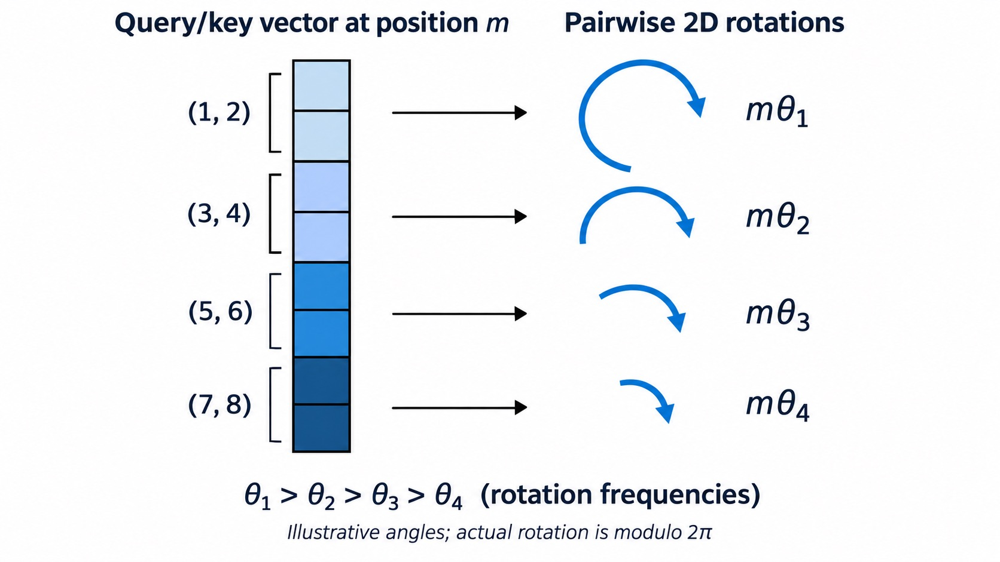
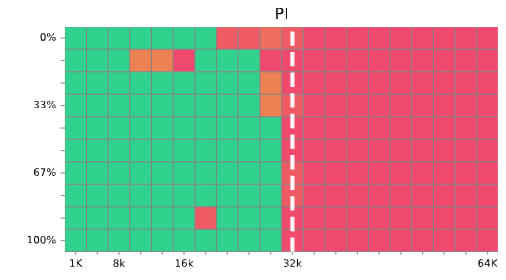

Mid-training adapts a pretrained model’s data distribution and operating context while continuing next-token prediction. Longer context needs more than a larger input limit: positional representations, training data, compute, and evaluation must work together.
- Core reading
- §1–§6: objective, position encoding, RoPE, implementation/cache behavior, context extension, costs, data mixtures, and basic long-context evaluation. Allow 55–75 minutes including the in-section questions.
- Practice
- §7 is a 20-point, 20–25 minute set on core material only. §8 provides an optional CPU lab. §9 contains optional bonus reading and optional bonus questions; it is not needed to solve §7.
- Slide scope
- The complete deck has 57 PDF pages through printed 61. Bonus labels appear on printed 9, 20–22, 38, 49–51, and 58–60. Those extensions are collected in §9. Printed 28 and 40–42 are absent; PDF page 53 is an unnumbered heatmap continuation, and the final page (printed 61) is blank.
- By the end
- Derive the relative-offset identity for RoPE; implement pairwise rotation; distinguish position interpolation from a base change; calculate long-context work and KV memory; reason about replay mixtures; read a retrieval heatmap without treating input capacity as a guarantee of usable context.
- Prerequisites
- Attention, causal masking, and KV caches (#12); elementary matrix multiplication and sine/cosine. Positions count tokens, not words. d is an even per-head query/key dimension; D is model width; L is layer count; B is the RoPE base; b is batch size. Logs are natural.
- Sources
- No additional paper is assigned. Primary reports and the deck are linked for attribution. The next lecture covers attention-efficiency methods and distributed training in more detail.
Slide-to-reading map and page offsets
- 1–2 → §1: the mid-training objective.
- 3–8, 10–19, 23–27 → §2–§3: positions, RoPE, and implementation.
- 29–37, 39, 43–46 → §4: extension recipes and costs.
- 47–48, 52 → §5: quality mixtures and replay.
- 53–56 and the unnumbered continuation → §6: retrieval evaluation.
- Bonus 9 → §9.1; 20–22 → §9.2; 38 → §9.3; 49–51 → §9.4; 58–60 → §9.5.
Printed 1–27 equal PDF pages 1–27. Printed 29–39 use PDF pages 28–38. Printed 43–56 use PDF pages 39–52. Bonus 58–60 use PDF pages 54–56. Links below use PDF page numbers.
0Predict before reading
If both token positions shift by 7, must each RoPE-rotated vector stay unchanged? Must their dot product stay unchanged when their content vectors stay fixed?
Predict first, then reveal
The vectors generally change. Their dot product stays unchanged under the same fixed frequency schedule because the relative offset is unchanged. This local identity does not guarantee that an entire model is unaffected by arbitrary changes to its input context.
A model accepts 64K tokens after a configuration edit. Has it demonstrated reliable retrieval at every position in that input?
Predict first, then reveal
No. The representation can be evaluated at those positions while the model still fails to use the information. Continued training and position/length-specific evaluation address different parts of that gap.
If context length grows fourfold, must every part of inference become 16 times more expensive?
Predict first, then reveal
No. Dense attention has quadratic per-sequence work, projections and KV storage scale differently, and wall time also depends on batching and kernels. Section 4.3 separates these quantities.
1Same prediction task, different training stage
In this lecture’s mid-training setup, continue causal next-token prediction on selected documents or sequences. There is no preference reward and no response-only prompt mask. A token-averaged batch loss is
$$\mathcal L_{\rm MT}=-\frac1{N_{\rm valid}}\sum_{j,t\in\mathcal V_j}\log p_\theta(x_{j,t}\mid x_{j,<t}),$$where $\mathcal V_j$ contains valid target positions and $N_{\rm valid}$ counts them. Exclude padding and define document-boundary masking when packing. “No prompt masking” does not mean ignoring padding or causal boundaries.
Mid-training can emphasize math, code, reasoning traces, or longer documents. These sequences may have structure even when the loss is ordinary next-token prediction. The stage label describes a recipe and curriculum, not a universal data-size ordering relative to post-training. We distinguish the objective from which data and positions it sees.
1.1 Same sequence, different loss positions
Compare the same tokens and model predictions under document-style next-token training and response-only SFT. This toy tokenizer treats each displayed item as one token. BOS supplies initial context; padding is excluded in both modes. The assistant header belongs to the prompt in this example.
| Target token | Illustrative NLL | Mid-training loss? | Response-only SFT loss? |
|---|---|---|---|
| <user> | 2.0 | Yes | No |
| 2+2? | 3.0 | Yes | No |
| <assistant> | 1.0 | Yes | No |
| 4 | 0.2 | Yes | Yes |
| <eos> | 0.3 | Yes | Yes |
| <pad> | Excluded | No | No |
Mid-training averages five terms: 6.5/5 = 1.3 nats/token. Response-only SFT averages two: 0.5/2 = 0.25 nats/token. These losses average different target sets, so their magnitudes are not a direct quality comparison.
Loss masking is not attention masking. The answer still conditions on the prompt. Removing a prompt label’s direct loss does not block gradients through prompt representations when they help predict the answer. Actual templates and training recipes determine which special tokens are targets.
2RoPE: absolute rotations, relative comparisons
2.1 Why represent position?
Unmasked self-attention without a positional signal is permutation-equivariant: permuting inputs permutes outputs rather than representing their order. A causal mask already breaks unrestricted permutation symmetry, so the stronger claim that a causal LM has no order information would be incorrect. Positional mechanisms provide additional information about indices and distances.
An absolute embedding adds a signal for index m to a token representation. A learned finite position table has no trained row beyond its index range; a formula-based encoding can be evaluated beyond training but need not generalize there. A relative mechanism makes pairwise comparisons depend on an offset such as n−m. Moving “bus” and “cab” four tokens apart to a later part of a sequence preserves that offset. Detailed relative-bias families from bonus slide 9 are optional (§9.1).
A query at position 8 compares with a key at position 3. Their positions become 19 and 14. What offset n−m does each pair have? Would a learned absolute-position lookup necessarily return the same two vectors?
Predict first, then reveal
The offset is −5 in both cases. Absolute lookups generally differ by index. A relative-offset comparison can be preserved without requiring either individual representation to remain unchanged.
2.2 Derive the two-dimensional identity
For angle φ, define a counterclockwise rotation
$$R(\phi)=\begin{bmatrix}\cos\phi&-\sin\phi\\\sin\phi&\cos\phi\end{bmatrix},\quad R_m=R(m\omega).$$Orthogonality gives $R_m^T R_m=I$, so rotation preserves a vector’s norm. For one fixed angular frequency ω, $R_m^T=R_{-m}$ and $R_aR_b=R_{a+b}$. Therefore
$$\widetilde q_m=R_m q_m,\quad\widetilde k_n=R_n k_n,$$ $$\widetilde q_m^T\widetilde k_n=q_m^T R_m^T R_n k_n=q_m^T R_{n-m}k_n.$$Here $q_m=W_Qh_m$ and $k_n=W_Kh_n$ are projected content vectors before RoPE. The positional factor depends only on n−m. Attention still depends on content and, after scores are computed, on the mask and softmax. RoPE is normally applied to queries and keys at each attention layer, not just added once to the input embeddings; the usual construction leaves values unrotated.
For a concrete check, let q = k = (1,0), ω = π/2, query position m = 3, and key position n = 1. The rotated vectors are (0,−1) and (0,+1), so the raw dot product is −1. Shifting both positions by 2 gives (0,+1) and (0,−1), still −1. The scaled attention logit is −1/√2; it is not yet a probability.
If the query receives Rₘ but the key is left unrotated, is the resulting positional factor determined only by n−m? Which operation in the derivation fails?
Predict first, then reveal
The score becomes qᵀRₘᵀk, with no Rₙ to combine with it. There is no general dependence on n−m. Applying the matched rotation schedule to both query and key supplies the cancellation.
2.3 Extend to an even head dimension
Split d coordinates into d/2 pairs. Pair i, indexed from 0, uses angular frequency
$$\omega_i=B^{-2i/d},\qquad i=0,\ldots,d/2-1,\quad B>1.$$Apply $R(m\omega_i)$ independently to each pair. The resulting block-diagonal matrix is orthogonal, and the relative-offset identity holds block by block. This is the construction in Su et al., RoFormer (first posted 2021). Our zero-based i corresponds to the slides’ one-based i−1.


For d = 4 and B = 100, the two frequencies are 1 and 0.1 radians per token. The first frequency is exactly 1 for any B. The last is $B^{-1+2/d}$, which is greater than 1/B for finite d. Increasing B slows pairs i > 0 while leaving the first unchanged. Exact wavelength heuristics are optional (§9.2).
Preserving norms does not preserve attention scores. Nor must scores decrease monotonically with distance: even q = k = (1,0) in one pair gives cos((n−m)ω), which oscillates. A periodic pair alone cannot uniquely identify arbitrary distances.
Use d = 4, B = 100, and q = k = (1,0,1,0). Let query m = 5 and key n = 2. Write the raw dot product, approximate it, and give the scaled attention logit. Would shifting both positions by 7 change these values?
Predict first, then reveal
The raw dot product is $\cos(-3)+\cos(-0.3)\approx-0.034656$. Divide by √4 = 2 for logit ≈ −0.017328. A joint shift preserves both because n−m remains −3, with the same content and frequency schedule.
3Implement rotations and preserve cache positions
No dense d × d matrix is needed. Each adjacent pair (a,b) becomes $(a\cos\phi-b\sin\phi,\ a\sin\phi+b\cos\phi)$. This takes O(d) arithmetic per vector, plus producing or looking up the trigonometric factors. A dense matrix multiplication would waste work on zeros.
The teaching function below uses adjacent pairs. Slide 25’s split-half implementation pairs the first half of a vector with the second half. Both layouts work when frequencies and coordinate ordering match; mixing conventions produces the wrong rotation.
import math
def rope(x, position, base=10000.0, scale=1.0):
if not x or len(x) % 2 or base <= 1 or scale <= 0:
raise ValueError("need nonempty even width, base>1, scale>0")
if not all(map(math.isfinite, [*x, position, base, scale])):
raise ValueError("inputs must be finite")
d, out = len(x), []
for i in range(d // 2):
angle = (position / scale) * base**(-2*i/d)
c, s = math.cos(angle), math.sin(angle)
a, b = x[2*i:2*i+2]
out.extend((a*c-b*s, a*s+b*c))
return out
For cached decoding, rotate a key using its sequence position when it is created and store that rotated key. Rotate a new query using its own current position before comparing it with the cache. Reusing a key does not mean resetting its index or rotating it again. Padding, packed sequences, and cache offsets must use the intended position convention.
A key was rotated at position 10 and cached. At the next decoding step a programmer rotates the stored vector by R₁₁ again. What does the pair effectively contain? What should happen instead?
Predict first, then reveal
With one frequency schedule, the rotation becomes R₁₁R₁₀ = R₂₁ applied to the original key. Keep the existing rotated key; only rotate the new query (and a newly created key, if any) at its own position.
4Extend the context: positions, training, and resources
4.1 Linear position interpolation
Suppose a model trained with length N₀ is to operate at N₁ = sN₀, with s > 1. Linear position interpolation (PI) uses m/s instead of m:
$$R(m\omega_i)\longrightarrow R\!\left(\frac m s\omega_i\right),\qquad\omega_i'=\omega_i/s.$$All frequencies slow by the same factor; a new long range maps approximately into the original positional range. For N₀ = 4096 and N₁ = 16384, s = 4, so index 12000 maps to 3000. An adjacent-token displacement becomes 1/4 in the original coordinate system, potentially weakening local positional resolution. Chen et al. (2023) combine PI with continued training; changing the formula alone is not their whole recipe.
Direction matters. To slow angular frequencies, divide ωᵢ by s. Increasing the base B also slows frequencies for i > 0, but does not change ω₀ = 1. Thus a base change is not uniform PI. The slide-36 phrase about reducing the “base frequency” should be read as reducing angular frequencies, not as decreasing the parameter B.
For d = 4, B = 100, compare original frequencies, PI with s = 4, and a base change to B = 10000. Which transformation preserves the first pair’s frequency? Why does this matter for claiming equivalence?
Predict first, then reveal
Original: (1,0.1). PI: (0.25,0.025). Base change: (1,0.01). The base change preserves the first frequency; PI slows it. They create different local and long-distance rotations, even if both are used in context-extension recipes.
4.2 A practical extension recipe
- Choose a target length and positional transformation; preserve the checkpoint’s pair convention.
- Continue next-token training on sequences carrying useful long-range dependencies, mixed with data that protects shorter-context capabilities.
- Validate both short and long contexts; vary target position and task type, and measure resource use.
Long sequences are a data-distribution problem as well as a position problem. Concatenating unrelated short texts creates length, but does not ensure that distant context helps predict the target. Define document boundaries and the dependencies that the model is meant to learn.
Historical examples illustrate recipes, not universal defaults. GLM-4.5 reports 4096 → 32768 → 131072 training lengths and a RoPE-base change from 10000 to 1000000 at the 32K stage. Gemma 3 reports a 32K → 128K extension for its 4B/12B/27B models with RoPE rescaling. Its reported scaling factor is 8; a model’s configured rescaling need not equal the simple target-length ratio. The GLM slide’s Gemma URL is a citation mismatch; these links point to the respective reports.
4.3 Required cost accounting
For fixed model architecture and dense full attention, separate per-sequence work from batch work and memory. Ignoring constant factors, one layer’s attention uses O(N²D) arithmetic; projections and fixed-ratio feed-forward layers use O(ND²). At fixed batch size b:
| Quantity | N → 4N, fixed b | Fixed token batch bN instead |
|---|---|---|
| Dense attention arithmetic | 16× | 4×, with b reduced to b/4 |
| Projection/MLP arithmetic | 4× | Approximately unchanged |
| Materialized attention-score entries | 16× | 4× |
| KV cache per live sequence | 4× | 4× per sequence; total depends on live count |
The score-entry row describes a naive materialization, not a universal training-memory law. Exact tiled attention kernels can avoid storing the entire N × N score matrix while retaining dense attention’s quadratic arithmetic. Weight and optimizer memory do not grow simply because sequence length changes. Actual activation memory depends on the implementation and checkpointing.
For L layers, nkv KV heads of width dh, blive live full-context sequences, and e bytes per element:
$$M_{\rm KV}\approx2L\,b_{\rm live}\,N\,n_{\rm kv}\,d_h\,e.$$The factor 2 stores keys and values. With L = 32, nkv = 8, dh = 128, e = 2, and one sequence, a 4096-token cache is 0.5 GiB; 16384 tokens need 2 GiB. This excludes weights, allocator overhead, and temporary buffers. Sliding-window layers can retain fewer tokens; the formula here assumes every layer retains the full context.
Generation still makes sequential token choices. Cached attention for one new query scans N stored positions per full-attention layer, so its attention work grows linearly with the current cache length. Prefill, decoding, training, and wall time therefore have different scaling stories. See #20 §3 for generation versus scoring.
Extend 4096 to 16384 while keeping the token batch fixed at 65536. What are the old and new sequence batch sizes, and the ratio of total dense-attention work? Why is 16× the wrong total-work answer here?
Predict first, then reveal
Batch size falls from 16 to 4. Attention work scales as bN², so the ratio is (4/16) × 4² = 4. The 16× factor describes one sequence or a fixed sequence batch, not this fixed-token batch.
5Mix quality domains and retain coverage
Changing the training mix changes which prediction errors dominate the gradient. A token-based replay mixture can be written
$$\mathcal L_{\rm mix}=r\mathcal L_{\rm replay}+(1-r)\mathcal L_{\rm target},\qquad0\le r\le1.$$Replay draws from a broad earlier distribution; the target component emphasizes desired domains or long-context material. Replay can help retain general capabilities, but does not guarantee that they are preserved. The Olmo 3 report illustrates targeted capability data and integration tests. Detailed stage shares, replay percentages, and learning-rate plots from bonus slides 49–51 are optional (§9.4); the basic mixture tradeoff here is core.
For a constructed 20B-token budget with r = 0.6, allocate 12B replay tokens and 8B target tokens. If the target pool contains 2B unique tokens, this is four pool-equivalents of exposure. Sampling with replacement does not ensure four complete traversals. More exposure can reinforce useful patterns or overfit redundancy; hold out evaluation data before tuning the mix.
State whether mixture weights refer to tokens, documents, sequences, or examples. Uniformly sampling a 100-token document and a 10000-token document does not give their tokens equal total influence. Measure short-context, target-domain, and long-context outcomes separately; a better aggregate can conceal a regression.
Use r = 0.6, replay NLL = 2 nats/token, and target NLL = 1 nat/token. Find the mixed NLL. Does averaging the two perplexities with these weights give the same perplexity as exponentiating mixed NLL?
Predict first, then reveal
Mixed NLL = 0.6(2) + 0.4(1) = 1.6, with perplexity $e^{1.6}\approx4.9530$. The weighted arithmetic mean $0.6e^2+0.4e^1\approx5.5207$ differs. Perplexity is the exponential of the applicable mean NLL, not a linear average of separately reported perplexities.
6Evaluate what the model can use
A needle-in-a-haystack (NIAH) task places answer-bearing information among distractors and asks the model to retrieve or use it. Evaluate a grid of input lengths and insertion positions, with multiple independent examples per cell. Keep track of the longest context actually seen during training or extension.


The PI panel has a 32K training boundary. Its much poorer region beyond that boundary is evidence about that evaluated model and task, not a theorem that every PI model fails at the same distance. A model accepting a length, training at that length, and reliably solving tasks at that length are three different statements.
A literal retrieval success does not establish reliable multi-step synthesis or reasoning over all input tokens. Complement retrieval tests with held-out long-text prediction and task-specific evaluation. Log the prompt template, answer placement, output budget, scoring rule, and number of examples. Optional §9.5 discusses harder non-literal benchmarks and specific positional-bias studies.
A model gets 95%, 40%, and 90% at beginning/middle/end placements at one length, each on 20 examples. What does a single average hide? What must be tested before claiming reliable performance at twice that length?
Predict first, then reveal
The equal-cell average is 75%, hiding the 40% middle result. Test the longer length directly at varied positions with sufficient independent cases, matched task/scoring settings, and the training boundary recorded. Neither the average nor the model’s accepted input size establishes longer-context reliability.
7Core practice: 20 points, 20–25 minutes
Only §1–§6 is needed. Bonus reading and bonus questions are excluded from this set. Show calculations and state the comparison being made.
Write the rotated-query/key dot product and reduce its positional factor to one rotation. What happens if both positions shift by c? Does norm preservation mean the original unrotated dot product is preserved?
Predict first, then reveal
$(R_mq)^T(R_nk)=q^TR_m^TR_nk=q^TR_{n-m}k$. A joint shift leaves (n+c)−(m+c) unchanged. Norm preservation does not preserve the unrotated dot product when q and k receive different rotations.
Marking: rotated expression 1; product identity 1; joint-shift argument 1; norm/dot distinction 1.
For d = 4, B = 100, compute both frequencies. Apply PI with s = 4 and map position 12000. Compare the new frequencies with changing B to 10000 without PI.
Predict first, then reveal
Original: (1,0.1). PI: (0.25,0.025); position maps to 3000. The base change instead yields (1,0.01), so the transformations differ.
Marking: original frequencies 1; PI frequencies 1; mapped position 1; base-change comparison 1.
Length rises from 4096 to 16384. At a fixed sequence batch, give the factors for dense-attention arithmetic and full-context KV cache size per sequence. At fixed token batch size, what factor replaces the attention result? Does avoiding materialized score matrices remove dense quadratic arithmetic?
Predict first, then reveal
Fixed sequence batch: attention 16×; per-sequence KV storage 4×. Fixed token batch: attention 4× because sequence batch size falls fourfold. Avoiding the full score matrix can save memory traffic/storage without removing dense pairwise arithmetic.
Marking: each scaling factor 1; memory-versus-arithmetic explanation 1.
Allocate 20B tokens with 60% replay. How many tokens come from each component? How many target-pool equivalents does a 2B-token target pool receive? Name a measurement that could reveal a capability regression hidden by an aggregate score.
Predict first, then reveal
12B replay and 8B target; 8/2 = four target-pool equivalents. Report a held-out general-domain or short-context metric separately from target-domain results, with a fixed evaluation composition.
Marking: replay count 1; target count 1; exposure 1; justified disaggregated measurement 1.
A decoder rotates a cached key again at each new query position. Separately, its evaluator reports only mean needle accuracy across positions and claims that accepting 64K proves a usable 64K context. Explain both errors and give one correction to each.
Predict first, then reveal
Repeated key rotation changes its encoded position. Store a key rotated once at creation and keep a consistent schedule. An average and an accepted input length can hide position-dependent failure; report length × position results and test the claimed operating range on the intended tasks.
Marking: cache error 1; cache correction 1; evaluation error 1; evaluation correction 1.
8Optional implementation lab
The algorithmic ideas in §3 are core; running this lab is optional. Download 23_midtraining_checks.py and run python3 23_midtraining_checks.py. It uses the Python standard library, with no model, GPU, or network. The default command checks core material; add --bonus only to run the optional bonus checks. It compares the pairwise implementation with explicitly constructed block matrices and verifies norm preservation, offset identities, interpolation, cached scores, costs, and quiz arithmetic.
Replace b*c by b*s in the second coordinate of the rotation. Which geometric identity should fail? Why does testing only the vector (0,0) fail to expose this mutation?
Predict first, then reveal
The mutated map is generally not orthogonal, so norm preservation and the dot-product identity fail for ordinary vectors. The zero vector maps to zero under both correct and incorrect linear maps, making it an uninformative fixture.
9Optional bonus reading and questions
All of §9 is optional. These topics correspond to the deck’s Bonus labels. Skip this section without losing any prerequisite for §7. Bonus questions below are separate from the 20-point core set.
9.1 Optional bonus · Relative-encoding families (slide 9)
Optional bonus: additive and content-dependent relative terms
A learned offset bias can add $b_{n-m}$ to a content logit; another family adds a term such as $q_m^Ta_{n-m}$, which depends on query content as well as distance. Local clipping/bucketing determines which offsets share parameters. These mechanisms need not be interchangeable with rotary encoding. Shaw et al. (2018) provide a primary relative-position formulation.
Which is unchanged by a joint position shift: bₙ, bₙ₋ₘ, or bₘ + bₙ, for arbitrary learned table entries?
Predict first, then reveal
Only bₙ₋ₘ is guaranteed unchanged. The other expressions depend on absolute indices unless their learned values have additional special structure.
9.2 Optional bonus · Rotation families and wavelengths (slides 20–22)
Optional bonus: why blocks, and what a base heuristic means
Arbitrary rotations about different axes need not commute. The relative-offset construction instead uses a consistent one-parameter family with the composition law R(a)R(b) = R(a+b). A continuous orthogonal family of this kind can be expressed, after a suitable basis change, using independent two-dimensional rotation blocks and fixed directions. The standard RoPE block construction supplies that structure directly; no general rotation-group proof is required for the core reading.
A pair’s wavelength in token-position units is $\lambda_i=2\pi/\omega_i$. The standard slowest pair has
$$\lambda_{\max}=2\pi B^{1-2/d},$$approximately 2πB only when the finite-d correction is negligible. One pair wraps periodically; multiple frequencies reduce simple collisions but do not guarantee reliable interpretation at arbitrary distances or finite precision. A base that leaves slow pairs nearly stationary during training trades different risks from one with repeated phase wrapping. A wavelength heuristic is not a context-length certificate.
With d = 4 and B = 100, find the slowest wavelength. Compare it to 2πB. Does one slow pair completing a turn prove that all RoPE coordinates repeat together?
Predict first, then reveal
The slowest frequency is 0.1, so its wavelength is 20π ≈ 62.83 positions, versus 200π ≈ 628.32 from the approximation. One pair returning to its angle does not establish a simultaneous repetition in every other pair.
9.3 Optional bonus · Other extension schemes (slide 38)
Optional bonus: preserve some frequencies while changing others
PI scales all frequencies uniformly. Base changes scale different pairs by different factors. Methods such as YaRN combine frequency-dependent interpolation with attention rescaling to address local-resolution and long-range tradeoffs. The formulas in bonus slide 38 compare choices; their method-specific derivations are not required here. Evaluate the entire recipe, including data and compute, rather than inferring a ranking from the transformation’s name.
9.4 Optional bonus · Stage sizes, replay shares, and LR (slides 49–51)
Optional bonus: how to read recipe tables
The slides collect examples with different definitions of stages, token budgets, and replay sources. Compare like denominators: M/P is a mid-training-to-pretraining ratio, whereas M/(P+M) is the mid-training fraction of their combined total. A constructed M = 20B and P = 1T gives 2% versus about 1.96%. Neither tells us which examples were repeated.
The learning-rate plots show data shifts near decay in particular recipes. They do not prove that one decay schedule is optimal or that a fixed replay percentage transfers to a new model. To isolate the data mix, branch from one checkpoint with the same token budget, context settings, and learning-rate schedule; change only the mix. A separate schedule comparison holds the mix fixed. Evaluate both target and general capabilities.
A stage consumes 100B tokens, 70% from a replay source. Does this establish 70B previously unseen tokens or identify the number of unique replay documents?
Predict first, then reveal
No. It specifies a token allocation under the stated accounting. Repeated sampling and document lengths determine unique coverage; stage size and unique-data size are different quantities.
9.5 Optional bonus · Beyond a literal needle (slides 58–60)
Optional bonus: effective context, position bias, and gold-context size
- NoLiMa (2025) minimizes literal overlap between question and relevant text. Its effective-length notion depends on a task and performance threshold, not just an advertised input limit.
- Lost in the Middle (2023) reports tasks where answer-bearing information is used better near context ends than in the middle. The result is a measured pattern, not an invariant of every model.
- Hidden in the Haystack varies the size of answer-bearing context and reports that smaller needles can be harder to use. Changing gold-context size can change evidence redundancy as well as total task difficulty.
To compare retrieval from short and long gold documents, what should be held fixed or explicitly varied besides gold-document length?
Predict first, then reveal
Control the underlying answer fact, question, total context budget, distractor composition, insertion position, prompt format, and scoring. State how redundancy and lexical overlap change. Otherwise a score difference cannot cleanly be attributed to gold-context size alone.
10Sources
- Course deck: topic scope, bonus labels, and native figures.
- Supplied self-study summary, Mid-Training and Long Context (November 2026): masking-display and frequency-spectrum ideas, adapted with simplified controls and revised gradient/phase explanations.
- Su et al., RoFormer: rotary construction and relative-position identity.
- Chen et al. (2023): position interpolation and continued training.
- GLM-4.5 and Gemma 3: attributed extension recipes.
- Olmo 3: targeted mid-training and integration tests.
- Lu et al., Controlled Study: length/position evaluation and the reproduced heatmaps.